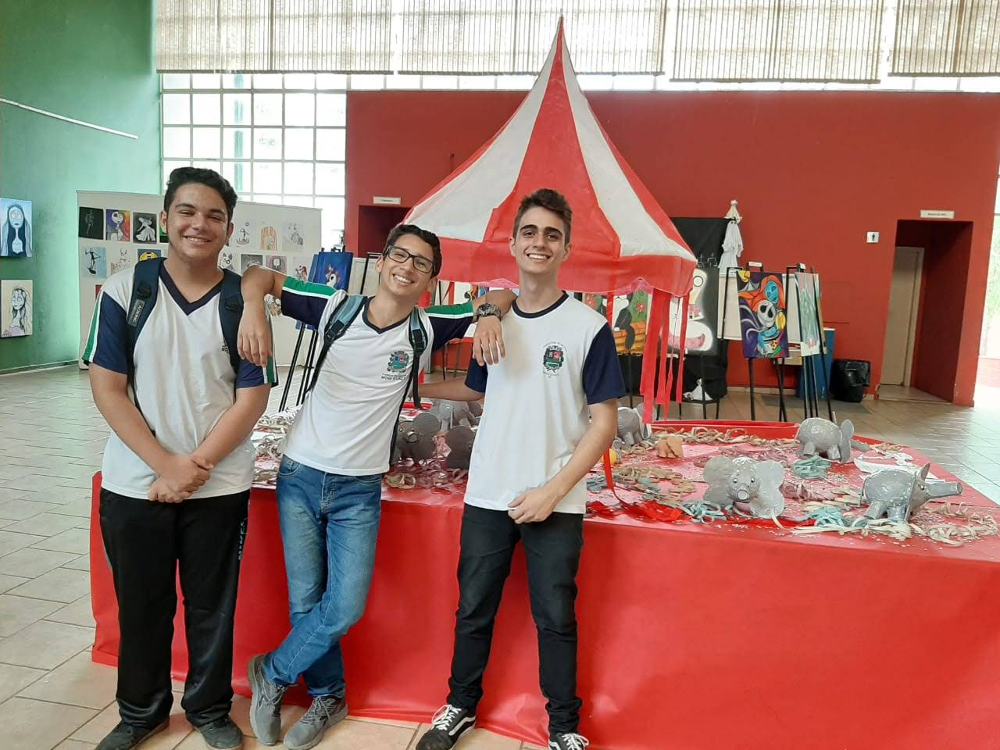
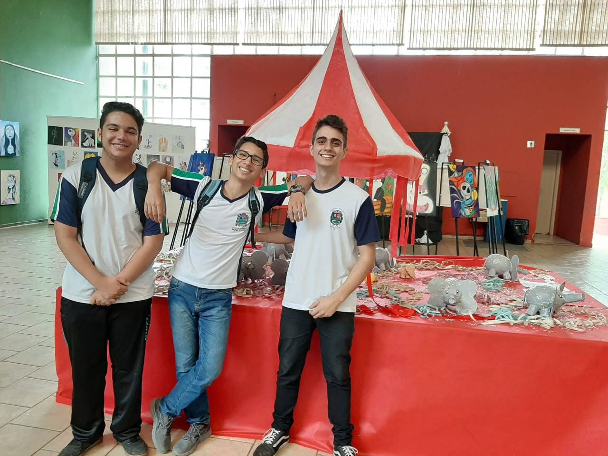

Gustavo Brandão Barros

Mini Biografia
Um grande fã de jogos, youtuber com um canal de Gameplays, Lives e zueira.
Moro no Barão de Ataliba Nogueira.
Gosto muito da área de exatas, porém na área de Humanas não me identifico.
Um dos meus passatempos preferidos é jogar videogame, gravar e editar vídeos.
Já pratiquei Kung-fu, natação, basquete e atualmente Jiu-Jitsu, também gosto de tocar violão.
Sou bem calmo, porém quando alguém bate o meu limite é melhor ir o mais longe possível.
EXPOSIÇÃO
 
